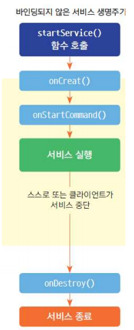
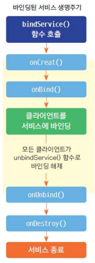
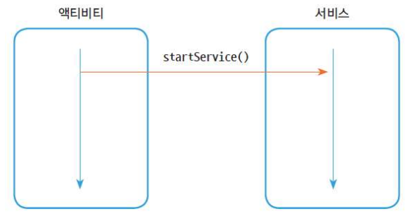
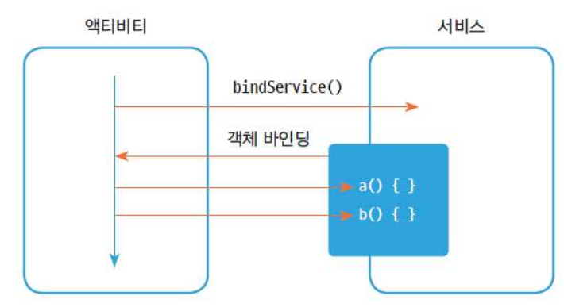

Chapter 10. 서비스 컴포넌트트¶
'깡샘의 안드로이드 앱 프로그래밍 with 코틀린' 15장 학습 내용
1절. 서비스¶
생성과 실행행¶
- Service 클래스 상속
- 서비스도 컴포넌트이므로 AndroidManifest.xml에 등록
// 서비스 컴포넌트 생성
class MyService : Service(){
override fun onBind(intent: Intent): IBinder?{
return null
}
}
<!-- 서비스 컴포넌트트 등록 -->
<service
android:name=".MyService"
android:enabled="true"
android:exported="true"></service>
서비스 실행¶
- startService()
- 서비스 실행 시 해당 서비스를 인텐트에 담아 매개변수로 전달
- setPackage()
- 앱 패키지명 명시
- 외부 앱 서비스는 암시적 인텐트로 실행
- AndroidManifest.xml 파일에 연동할 앱 패키지 등록 필수
// 암시적 인텐트 실행
val intent = Intent("ACTION_OUTER_SERVICE")
intent.setPackage("com.example.test_outer")
startService(intent)
서비스 종료¶
- stopService()
bindService()¶
- ServiceConnection 인터페이스를 구현한 객체 준비
- onServiceConnected() : bindService() 함수
- 서비스 구동 시 자동 호출
- onServiceDisconnected() : 비정상 종료(프로세스 크래시 등) 발생 시
- 시스템이 자동 호출 (정상적으로 unbindService() 호출 시에는 호출되지 않음)
// ServiceConnection 인터페이스 구현
val connection: ServiceConnection = object : ServiceConnection{
override fun onServiceConnected(name: ComponentName?, service: IBinder?) { }
override fun onServiceDisconnected(name: ComponentName?) { }
}
// 서비스 실행
val intent = Intent(this, MyService::class.java)
bindService(intent, connection, Context.BIND_AUTO_CREATE)
서비스 생명 주기¶
| 서비스 실행 방법 |
|---|
| startService() |
| bindService() |
startService()¶

- 서비스 객체 생성 시 onCreate() → onStartCommand() 호출
- onCreate() : 서비스 객체가 생성 시 처음 한 번만 호출
- onStartCommand() : startService() 실행마다 반복 호출
- stopService() : 서비스 종료 시 바로 전에 onDestory() 호출
bindService()¶

- 서비스 객체 생성 시 onCreate → onBind() 호출
- 다시 bindService() 실행 시 onBind() 함수만 재호출
- unbindService()로 서비스 종료
- onUnbind() → onDestory()까지 실행
2절. 바인딩 서비스¶
IBinder 객체 바인딩¶
- startService()로 서비스 실행 가정

- 서비스와 액티비티 상호작용 시 bindService()

서비스 코드¶
- onBind() 함수 반환 타입 : IBinder 인터페이스
- 서비스를 실행한 곳에서 클래스 함수를 호출하고 매개 변수와 반환값으로 데이터 송수신
// 서비스 객체 바인딩
class MyBinder : Binder(){
fun funA(arg: Int){
}
fun funB(arg: Int): Int {
return arg * arg
}
}
override fun onBind(intent: Intent): IBinder?{
return MyBinder()
}
액티비티 코드¶
- onBind() 함수에서 반환한 객체를 ServiceConnection 인터페이스를 구현한 객체의 onServiceConnected() 함수로 반환받음
// 액티비티에서 객체 전달받은 후 사용
val connection: ServiceConnection = object : ServiceConnection {
override fun onServiceConnected(name: ComponentName?, service: IBinder?){
serviceBinder = service as MyService.MyBinder
}
override fun onServiceDisconnected(name: COmponentName?){
}
}
AIDL 통신 기법¶
- 데이터를 송수신하는 프로세스 간 통신
- 서비스 컴포넌트 bindService() 이용
- 서비스 제공 앱, 서비스 사용 앱 모두 build.gradle.kts에 아래 선언 필수
서비스 제공 앱¶
- AIDL 이용을 위해 확장자가 aidl인 파일 필요
// AIDL 파일 내용
package com.example.test_aidl;
interface MyAIDLInterface{
void funA(string data);
int funB();
}
- 서비스 : AIDL 파일 선언 함수 구현으로 실제 작업 처리 내용이 작성된 곳
- AIDL
- 바인드 서비스 이용
- onBind() 함수에서 서비스를 인텐트로 실행한 곳에 객체 전달
- AIDL 파일을 구현한 객체가 아닌 프로세스 간 통신을 대행하는 Stub 전달
// 서비스 컴포넌트 구현
class MyAIDLService : Service(){
override fun onBind(intent: Intent): IBinder {
return object : MyAIDLInterface.Stub(){
override fun funA(data: String?){
}
override fun funB() : Int{
return 10
}
}
}
}
서비스 이용 외부 앱¶
- bindService() 함수 이용
- 인텐트에 패키지 정보 포함
- AIDL 서비스 이용 앱도 AIDL 서비스 제공 앱의 AIDL 파일 보유 필수
// 외부 앱 서비스 실행
class MainActivity : AppCompatActivity(){
lateinit var aidlService: MyAIDLInferface
// (...생략...)
override fun onCreate(savecInstanceState: Bundle?){
super.onCreate(savedInstanceState)
// (...생략...)
val intent = Intent("ACTION_AIDL_SERVICE")
intent.setPackage("com.example.test_outer")
bindService(intent, connection, Context.BIND_AUTO_CREATE)
}
// (...생략...)
val connection: ServiceConnection = object : ServiceConnection{
override fun onServiceConnected(name: ComponentName?, service: IBinder?){
aidlService = MyAIDLInterface.Stub.asInterface(service)
}
override fun onServiceDisconnected(name: ComponentName?){
Log.d("yunseo", "onServiceDisconnected...")
}
}
}
3절. 백그라운드 제약¶
리시버 백그라운드 제약¶
4절. 잡 스케줄러¶
5절. MP3 앱 구현¶
1) 모듈 생성 & 빌드 그래들 작성¶
- Ch15_Outer : 음악 재생 앱
- Ch15_Service : 프로세스 간 통신으로 Ch15_Outer앱 조종 리모컨 역할
2) 실습 파일 복사¶
- res의 drawable, layout 디렉터리를 Ch15_Service 모듈의 같은 위치에 복사
- 코틀린 파일이 있는 디렉터리에서 MainActivity.kt 파일 복사 후 Ch15_Service 모듈의 소스 영역에 덮어쓰기
3) 재생 음원 파일 준비¶
- res/raw 디렉터리를 Ch15_outer 모듈 res 에 복사
4) AIDL 서비스 작성¶
- 파일이 있는 패키지에서 마우스 오른쪽 버튼 클릭
- [New - AIDL - AIDL File - 파일 명 입력 - finish]
- 자동으로 패키지까지 잡혀서 aidl 파일 생성